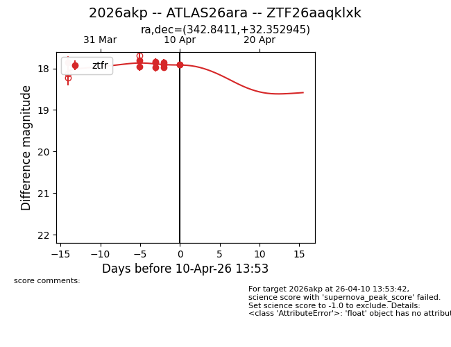
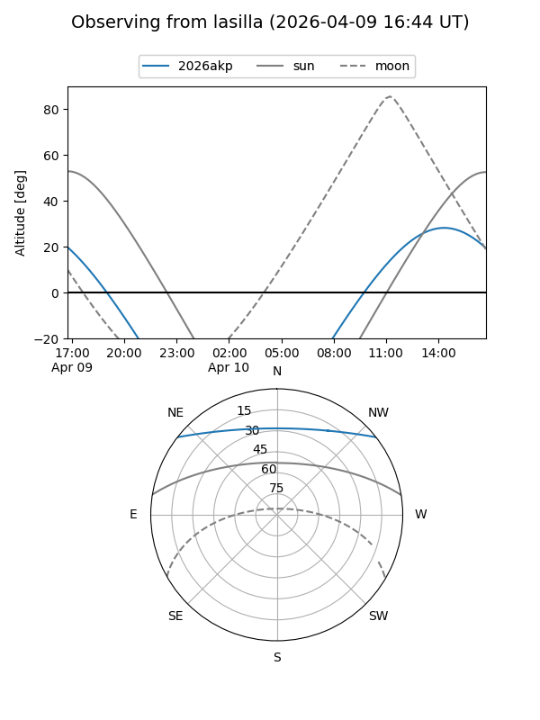
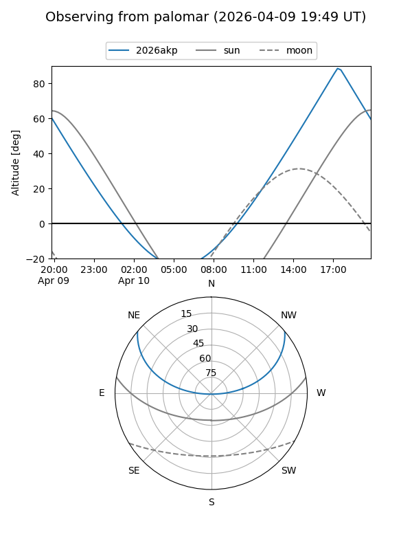
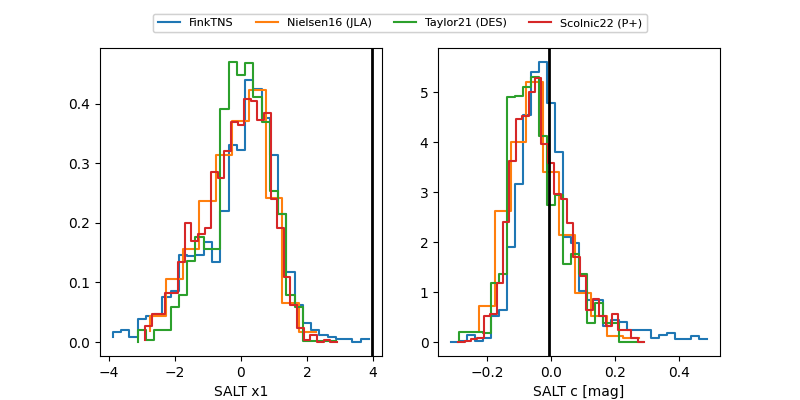

2026akp
Target 2026akp at 2026-04-10 14:01
Aliases and brokers:
FINK: link
Lasair: link
ALeRCE: link
TNS: link
YSE: link
alt names
ZTF26aaqklxk (ztf,fink_ztf)
2026akp (tns,yse)
ATLAS26ara (atlas)
Coordinates:
equatorial (ra, dec) = 342.8411,+32.35295
equatorial (HMS+DMS) = 22:51:21.87,+32:21:10.60
galactic (l, b) = (95.3726,-24.01490)
Flags:
Photometry:
last ztfr=17.90
11 ztfr detections
Lightcurve

Visibility


Additional plots
